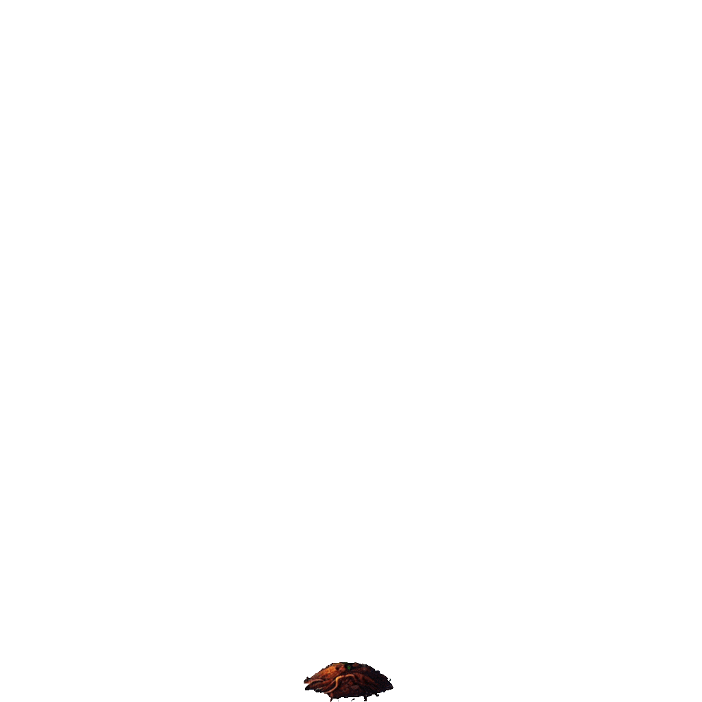

Nuestro pequeño árbol Nogalito ha notado que hay arboles en el bosque que necesitan de tu ayuda para crecer y alcanzar el sol. Y para lograrlo tienes que ayudarlos a invocando la magia de la fotosíntesis.
Ayuda al árbol a completar las tres fases del proceso de fotosíntesis resolviendo operaciones matemáticas correctamente.
Es el proceso por el que pasan todas las plantas para crecer y llenar nuestro planeta de oxígeno, lo podemos dividir en 3 fases:
Las plantas captan la energía del sol, dioxido de carbono y agua!
Con todo lo que se absorbe, las plantas producen energía. Cada respuesta correcta va a ser un impulso de energía para el árbol.
Finalmente, la planta usa toda esa energía guardada para crear su propio alimento y oxígeno.
Resuelve todas las operaciones matemáticas que puedas para ayudar al árbol a crecer lo más alto posible. ¡Tu esfuerzo hará que la naturaleza florezca!